Se descubrió hace siglos que ciertos tipos de materiales se atraerían misteriosamente después de ser frotados juntos. Por ejemplo: después de frotar un pedazo de seda contra un pedazo de vidrio, la seda y el vidrio tenderían a pegarse juntos. De hecho, había una fuerza atractiva que podía demostrarse incluso cuando los dos materiales estaban separados:
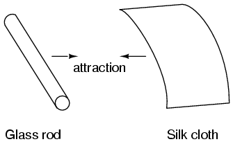
El vidrio y la seda no son los únicos materiales que se sabe que se comportan así. Cualquier persona que haya rozado contra un globo de látex sólo para encontrar que trata de atenerse a ellos ha experimentado este mismo fenómeno. La cera de parafina y el paño de lana son otro par de materiales experimentadores tempranos reconocidos que manifiestan fuerzas atractivas después de ser frotados juntos:
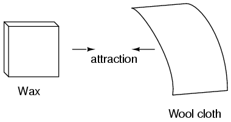
Este fenómeno se hizo aún más interesante cuando se descubrió que los materiales idénticos, después de frotarse con sus respectivos paños, siempre se repelían:
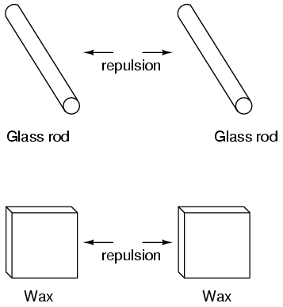
También se observó que cuando un pedazo de vidrio frotado con seda fue expuesto a un pedazo de cera frotada con lana, los dos materiales se atraen unos a otros:
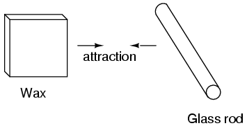
Además, se encontró que cualquier material que demostraba propiedades de atracción o repulsión después de ser frotado podría clasificarse en una de dos categorías distintas: atraído al vidrio y repelido por la cera, o repelido por el vidrio y atraído a la cera. Era uno u otro: no se encontraron materiales que pudieran ser atraídos o repelidos por el vidrio y la cera, o que reaccionaran a uno sin reaccionar al otro.
Se prestó más atención a las piezas de tela utilizadas para hacer el frotamiento. Se descubrió que después de frotar dos piezas de vidrio con dos piezas de tela de seda, no sólo las piezas de vidrio se repelen, pero también lo hicieron los paños. El mismo fenómeno se mantuvo para las piezas de lana utilizadas para frotar la cera:
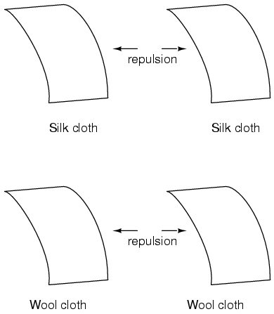
Ahora, esto era realmente extraño de ser testigo. Después de todo, ninguno de estos objetos se vio visiblemente alterado por el frotamiento, sin embargo, se comportaron de manera diferente que antes de que fueron frotados. Cualquier cambio que haya tenido lugar para que estos materiales se atraigan o se repelan unos a otros era invisible.
Algunos experimentadores especularon que se estaban transfiriendo "fluidos" invisibles de un objeto a otro durante el proceso de frotamiento, y que estos "fluidos" eran capaces de efectuar una fuerza física a una distancia. Charles Dufay fue uno de los primeros experimentadores que demostró que había definitivamente dos tipos diferentes de cambios forjados frotando ciertos pares de objetos juntos. El hecho de que hubiera más de un tipo de cambio manifestado en estos materiales era evidente por el hecho de que había dos tipos de fuerzas producidas : la atracción y la repulsión . La hipotética transferencia de fluido se conoció como carga .
Un investigador pionero, Benjamin Franklin, llegó a la conclusión de que sólo había un fluido intercambiado entre objetos frotados, y que las dos "cargas" diferentes no eran más que un exceso o una deficiencia de ese fluido. Después de experimentar con cera y lana, Franklin sugirió que la lana gruesa quitó parte de este líquido invisible de la cera suave, causando un exceso de líquido en la lana y una deficiencia de líquido en la cera. La disparidad resultante en el contenido de fluido entre la lana y la cera entonces causaría una fuerza atractiva, ya que el fluido trató de recuperar su equilibrio anterior entre los dos materiales.
Postular la existencia de un solo "fluido" que se ganaba o se perdía por frotamiento era lo que mejor se ajustaba a la conducta observada: que todos estos materiales cayeron perfectamente en una de dos categorías al frotarse, y lo más importante, que los dos materiales activos frotaron contra cada uno Otros siempre caían en categorías opuestas, como lo demuestra su invariable atracción entre sí. En otras palabras, nunca hubo un momento en el que dos materiales frotados entre sí se convirtieran en positivos o negativos.
Siguiendo la especulación de Franklin de que la lana frotaba algo fuera de la cera, el tipo de carga que se asoció con la cera frotada se conoció como "negativo" (porque se suponía que tenía una deficiencia de líquido) mientras que el tipo de carga asociado con el frotamiento La lana se hizo conocida como "positiva" (porque se suponía que tenía un exceso de líquido). ¡Poco sabía él que su conjetura inocente causaría mucha confusión a los estudiantes de electricidad en el futuro!
Medidas precisas de la carga eléctrica fueron realizadas por el físico francés Charles Coulomb en la década de 1780 utilizando un dispositivo llamado equilibrio de torsión que mide la fuerza generada entre dos objetos cargados eléctricamente. Los resultados del trabajo de Coulomb condujeron al desarrollo de una unidad de carga eléctrica nombrada en su honor, el coulomb . Si dos objetos "puntuales" (objetos hipotéticos que no tienen una superficie apreciable) estuvieran igualmente cargados a una medida de 1 colombina y colocados a 1 metro de distancia, generarían una fuerza de unos 9 mil millones de newtons Libras), atrayendo o repeliendo dependiendo de los tipos de cargas implicadas. Se encontró que la definición operativa de un coulomb como unidad de carga eléctrica (en términos de fuerza generada entre cargas puntuales) era igual a un exceso o deficiencia de aproximadamente 6.250.000.000.000.000.000 de electrones. O, dicho en términos inversos, un electrón tiene una carga de alrededor de 0.00000000000000000016 coulombs. Siendo que un electrón es el portador más pequeño conocido de carga eléctrica , esta última figura de carga para el electrón se define como la carga elemental .
Se descubrió mucho más tarde que este "fluido" estaba compuesto en realidad por fragmentos extremadamente pequeños de materia llamados electrones , así nombrados en honor a la antigua palabra griega para ámbar: otro material que exhibe propiedades cargadas cuando se frota con tela. Desde entonces, la experimentación ha revelado que todos los objetos están compuestos de "bloques de construcción" extremadamente pequeños conocidos como átomos , y que estos átomos están a su vez compuestos de componentes más pequeños conocidos como partículas . Las tres partículas fundamentales que comprenden la mayoría de los átomos se llaman protones , neutrones y electrones .hilst the majority of atoms have a combination of protons, neutrons, and electrons, not all atoms have neutrons; Un ejemplo es el isótopo protium ( 1 H 1 ) de hidrógeno (hidrógeno-1) que es la forma más ligera y más común de hidrógeno que sólo tiene un protón y un electrón.ms are far too small to be seen, but if we could look at one, it might appear something like this:
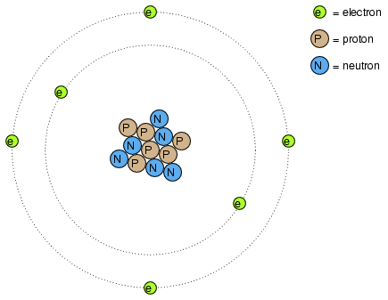
Aunque cada átomo en una pieza de material tiende a mantenerse unido como una unidad, en realidad hay mucho espacio vacío entre los electrones y el grupo de protones y neutrones que residen en el medio.
Este modelo crudo es el del elemento carbono, con seis protones, seis neutrones y seis electrones. En cualquier átomo, los protones y los neutrones están estrechamente unidos, lo cual es una cualidad importante. El núcleo estrechamente unido de protones y neutrones en el centro del átomo se llama núcleo y el número de protones en el núcleo de un átomo determina su identidad elemental: cambia el número de protones en el núcleo de un átomo y cambia el tipo de átomos Átomo que es. De hecho, si pudieras eliminar tres protones del núcleo de un átomo de plomo, habrás logrado el sueño de los viejos alquimistas de producir un átomo de oro. La estrecha vinculación de los protones en el núcleo es responsable de la identidad estable de los elementos químicos, y el fracaso de los alquimistas para lograr su sueño.
Los neutrones son mucho menos influyentes en el carácter químico y la identidad de un átomo que los protones, aunque son tan difíciles de agregar o quitar del núcleo, estando tan estrechamente unidos. Si los neutrones son agregados o ganados, el átomo todavía conservará la misma identidad química, pero su masa cambiará ligeramente y puede adquirir extrañas propiedades nucleares como la radiactividad.
Sin embargo, los electrones tienen significativamente más libertad para moverse en un átomo que los protones o los neutrones. De hecho, pueden ser eliminados de sus respectivas posiciones (incluso dejando el átomo por completo!) Por mucho menos energía que lo que se necesita para desalojar las partículas en el núcleo. Si esto sucede, el átomo aún conserva su identidad química, pero se produce un desequilibrio importante. Los electrones y los protones son únicos en el hecho de que se sienten atraídos unos a otros a lo largo de una distancia. Es esta atracción sobre la distancia lo que causa la atracción entre los objetos frotados, donde los electrones se alejan de sus átomos originales para residir alrededor de los átomos de otro objeto.
Los electrones tienden a repeler otros electrones a lo largo de una distancia, al igual que los protones con otros protones. La única razón por la que los protones se unen en el núcleo de un átomo es debido a una fuerza mucho más fuerte llamada fuerza nuclear fuerte que tiene efecto sólo a distancias muy cortas. Debido a este comportamiento de atracción / repulsión entre las partículas individuales, los electrones y los protones se dice que tienen cargas eléctricas opuestas. Es decir, cada electrón tiene una carga negativa, y cada protón es una carga positiva. En números iguales dentro de un átomo, neutralizan la presencia de cada uno de manera que la carga neta dentro del átomo es cero. Esta es la razón por la que la imagen de un átomo de carbono tenía seis electrones: equilibrar la carga eléctrica de los seis protones en el núcleo. Si los electrones se van o los electrones extra llegan, la carga eléctrica neta del átomo será desequilibrada, dejando al átomo "cargado" como un todo, haciendo que interactúe con partículas cargadas y otros átomos cargados cerca. Los neutrones no son atraídos ni repelidos por electrones, protones, ni siquiera otros neutrones, y por lo tanto se categorizan como carentes de todo.
El proceso de los electrones que llegan o salen es exactamente lo que sucede cuando ciertas combinaciones de materiales se frotan entre sí: los electrones de los átomos de un material son forzados por el frotamiento a dejar sus respectivos átomos y transferirse a los átomos del otro material. En otras palabras, los electrones comprenden el "fluido" hipotetizado por Benjamin Franklin.
El resultado de un desequilibrio de este "fluido" (electrones) entre objetos se llama electricidad estática . Se llama "estática" porque los electrones desplazados tienden a permanecer estacionarios después de ser movidos de un material aislante a otro. En el caso de la cera y la lana, se determinó mediante la experimentación adicional que los electrones en la lana realmente transferidos a los átomos en la cera, que es exactamente opuesto a la conjetura de Franklin! En honor a la designación de Franklin de que la carga de la cera es "negativa" y la carga de la lana es "positiva", se dice que los electrones tienen una influencia de carga "negativa". Por lo tanto, un objeto cuyos átomos han recibido un excedente de electrones se dice que está cargado negativamente , mientras que un objeto cuyos átomos carecen de electrones se dice que se carga positivamente , tan confuso como estas designaciones pueden parecer. En el momento en que se descubrió la verdadera naturaleza del "líquido" eléctrico, la nomenclatura de Franklin de carga eléctrica estaba demasiado bien establecida para ser fácilmente cambiada, y así sigue siendo hasta el día de hoy.
Michael Faraday demostró (1832) que la electricidad estática era la misma que la producida por una batería o un generador. La electricidad estática es, en su mayor parte, una molestia. El polvo negro y el polvo sin humo han añadido grafito para evitar el encendido debido a la electricidad estática.. Provoca daños a circuitos semiconductores sensibles. Si bien es posible producir motores alimentados por alta tensión y baja corriente característica de la electricidad estática, esto no es económico. Las pocas aplicaciones prácticas de la electricidad estática incluyen la impresión xerográfica, el filtro de aire electrostático y el generador Van de Graaff de alta tensión.
Los electrones de diferentes tipos de átomos tienen diferentes grados de libertad para moverse. Con algunos tipos de materiales, como los metales, los electrones más externos de los átomos están tan sueltos que se mueven caóticamente en el espacio entre los átomos de ese material por nada más que la influencia de la energía calorífica a temperatura ambiente. Debido a que estos electrones virtualmente no unidos son libres de dejar sus respectivos átomos y flotar alrededor en el espacio entre átomos adyacentes, a menudo son llamados electrones libres .
En otros tipos de materiales como el vidrio, los electrones de los átomos tienen muy poca libertad para moverse. Mientras que las fuerzas externas tales como el frotamiento físico pueden obligar a algunos de estos electrones a dejar sus respectivos átomos y transferirse a los átomos de otro material, no se mueven entre los átomos dentro de ese material con mucha facilidad.
Esta movilidad relativa de electrones dentro de un material se conoce como conductividad eléctrica . La conductividad está determinada por los tipos de átomos en un material (el número de protones en el núcleo de cada átomo, determinando su identidad química) y cómo los átomos se unen entre sí. Los materiales con alta movilidad de electrones (muchos electrones libres) se llaman conductores , mientras que los materiales con baja movilidad de electrones (pocos o ningún electrones libres) se llaman aisladores ./p>
Aquí hay algunos ejemplos comunes de conductores y aisladores:
Debe entenderse que no todos los materiales conductores tienen el mismo nivel de conductividad, y no todos los aisladores son igualmente resistentes al movimiento de electrones. La conductividad eléctrica es análoga a la transparencia de ciertos materiales a la luz: los materiales que "conducen" fácilmente la luz se llaman "transparentes", mientras que los que no lo hacen se llaman "opacos". Sin embargo, no todos los materiales transparentes son igualmente conductores a la luz. El vidrio de la ventana es mejor que la mayoría de los plásticos, y ciertamente mejor que la fibra de vidrio "clara". Lo mismo ocurre con los conductores eléctricos, algunos siendo mejores que otros.
Por ejemplo, la plata es el mejor conductor en la lista de "conductores", ofreciendo un paso más fácil para los electrones que cualquier otro material citado. El agua sucia y el hormigón también se enumeran como conductores, pero estos materiales son sustancialmente menos conductores que cualquier metal.
También debe entenderse que algunos materiales experimentan cambios en sus propiedades eléctricas bajo diferentes condiciones. El vidrio, por ejemplo, es un muy buen aislante a temperatura ambiente, pero se convierte en conductor cuando se calienta a una temperatura muy alta. Los gases como el aire, normalmente materiales aislantes, también se convierten en conductores si se calientan a temperaturas muy altas. La mayoría de los metales se convierten en conductores más pobres cuando se calientan, y mejores conductores cuando se enfrían. Muchos materiales conductores se convierten perfectamente conductores (esto se llama superconductividad ) a temperaturas extremadamente bajas.
Mientras que el movimiento normal de electrones "libres" en un conductor es aleatorio, sin una dirección o velocidad particular, los electrones pueden ser influenciados para moverse de manera coordinada a través de un material conductor. Este movimiento uniforme de electrones es lo que llamamos electricidad , o corriente eléctrica . Para ser más precisos, podría llamarse electricidad dinámica en contraste con la electricidad estática , que es una acumulación inmóvil de carga eléctrica. Al igual que el agua que fluye a través del vacío de una tubería, los electrones son capaces de moverse dentro del espacio vacío dentro y entre los átomos de un conductor. El conductor puede parecer sólido a nuestros ojos, pero cualquier material compuesto de átomos es en su mayoría espacio vacío! La analogía del flujo de líquido es tan apropiada que el movimiento de los electrones a través de un conductor se refiere a menudo como un "flujo".
Una observación digna de mención puede hacerse aquí. A medida que cada electrón se mueve uniformemente a través de un conductor, empuja al que está delante de él, de manera que todos los electrones se mueven juntos como un grupo. El arranque y la detención del flujo de electrones a través de la longitud de una trayectoria conductora es prácticamente instantáneo desde un extremo de un conductor a otro, aunque el movimiento de cada electrón puede ser muy lento. Una analogía aproximada es la de un tubo lleno de extremo a extremo con mármoles:
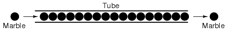
El tubo está lleno de mármoles, así como un conductor está lleno de electrones libres listos para ser movidos por una influencia exterior. Si un solo mármol se inserta repentinamente en este tubo completo en el lado izquierdo, otro mármol inmediatamente intentará salir del tubo a la derecha. A pesar de que cada mármol sólo viajó una distancia corta, la transferencia de movimiento a través del tubo es prácticamente instantánea desde el extremo izquierdo al extremo derecho, no importa cuánto tiempo el tubo es. Con electricidad, el efecto general de un extremo de un conductor al otro sucede a la velocidad de la luz: ¡una velocidad de 186.000 millas por segundo !!! Sin embargo, cada electrón individual viaja a través del conductor a un ritmo mucho más lento.
Si queremos que los electrones fluyan en una determinada dirección a un cierto lugar, debemos proporcionar el camino adecuado para que se muevan, al igual que un fontanero debe instalar la tubería para que el agua fluya donde él o ella quiere que fluya. Para facilitar esto, los alambres están hechos de metales altamente conductores tales como cobre o aluminio en una amplia variedad de tamaños.
Recuerde que los electrones pueden fluir sólo cuando tienen la oportunidad de moverse en el espacio entre los átomos de un material. Esto significa que puede haber corriente eléctrica sólo cuando existe una trayectoria continua de material conductor que proporciona un conducto para que los electrones viajen a través. En la analogía del mármol, los mármoles pueden fluir hacia el lado izquierdo del tubo (y, en consecuencia, a través del tubo) si y sólo si el tubo está abierto en el lado derecho para que los mármoles fluyan. Si el tubo está bloqueado en el lado derecho, los mármoles sólo se "acumulan" dentro del tubo, y el mármol "flujo" no ocurrirá. Lo mismo ocurre con la corriente eléctrica: el flujo continuo de electrones requiere que haya un camino ininterrumpido para permitir ese flujo. Veamos un diagrama para ilustrar cómo funciona esto:
Una línea delgada y sólida (como se muestra arriba) es el símbolo convencional para una pieza continua de alambre. Puesto que el alambre está hecho de un material conductor, tal como el cobre, sus átomos constituyentes tienen muchos electrones libres que pueden moverse fácilmente a través del alambre. Sin embargo, nunca habrá un flujo continuo o uniforme de electrones dentro de este alambre a menos que tengan un lugar de donde venir y un lugar para ir. Añadamos un electrón hipotético "Fuente" y "Destino:"
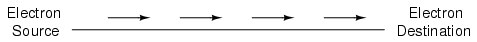
Ahora, con la fuente de electrones empujando nuevos electrones en el alambre en el lado izquierdo, el flujo de electrones a través del alambre puede ocurrir (como lo indican las flechas que apuntan de izquierda a derecha). Sin embargo, el flujo se interrumpirá si la trayectoria conductora formada por el alambre se rompe:
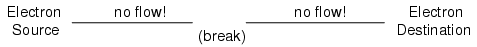
Puesto que el aire es un material aislante, y un entrehierro separa los dos pedazos de alambre, la trayectoria once-continuous se ha roto ahora, y los electrones no pueden fluir de la fuente al destino. Esto es como cortar una tubería de agua en dos y tapar los extremos rotos de la tubería: el agua no puede fluir si no hay salida fuera de la tubería. En términos eléctricos, teníamos una condición de continuidad eléctrica cuando el alambre estaba en una sola pieza, y ahora esa continuidad se rompe con el alambre cortado y separado.
Si tuviéramos que tomar otro trozo de alambre que conduce al Destino y simplemente hacer contacto físico con el alambre que conduce a la Fuente, tendríamos una vez más un camino continuo para que los electrones fluyan. Los dos puntos en el diagrama indican un contacto físico (metal con metal) entre las piezas de alambre:
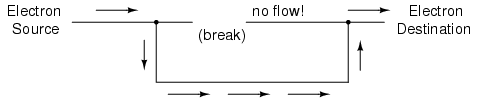
Ahora, tenemos continuidad de la Fuente, a la conexión recién hecha, abajo, a la derecha, y hasta el Destino. Esto es análogo a poner un "tee" en una de las tuberías tapadas y dirigir el agua a través de un nuevo segmento de tubería hasta su destino. Por favor, tenga en cuenta que el segmento roto de alambre en el lado derecho no tiene electrones que fluye a través de él, ya que ya no es parte de un camino completo de la Fuente al Destino.
Es interesante observar que no se produce "desgaste" en los cables debido a esta corriente eléctrica, a diferencia de las tuberías que transportan agua que eventualmente son corroídas y desgastadas por flujos prolongados. Sin embargo, los electrones encuentran cierto grado de fricción mientras se mueven, y esta fricción puede generar calor en un conductor. Este es un tema que exploraremos en mayor detalle más adelante.
Usted podría haber estado preguntándose cómo los electrones pueden fluir continuamente en una dirección uniforme a través de cables sin el beneficio de estas fuentes de electrones hipotéticos y destinos. Para que el esquema de origen y destino funcione, ambos tendrían que tener una capacidad infinita de electrones para sostener un flujo continuo. Utilizando la analogía del mármol y del tubo, la fuente de mármol y los cubos de destino de mármol tendrían que ser infinitamente grandes para contener suficiente capacidad de mármol para que un "flujo" de mármoles pudiera sostenerse.
La respuesta a esta paradoja se encuentra en el concepto de un circuito : un circuito sin fin interminable para los electrones. Si tomamos un alambre, o muchos cables unidos de extremo a extremo, y lo rodeamos para que forme un camino continuo, tenemos los medios para soportar un flujo uniforme de electrones sin tener que recurrir a fuentes infinitas y destinos:
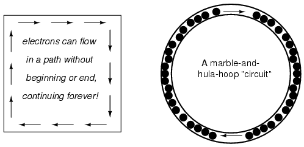
Cada electrón que avanza en el sentido de las agujas del reloj en este circuito empuja al que está delante de él, que empuja al que está frente a él, y así sucesivamente, y así sucesivamente, igual que un aro de hula lleno de mármoles. Ahora, tenemos la capacidad de soportar un flujo continuo de electrones indefinidamente sin la necesidad de suministros infinitos de electrones y vertidos. Todo lo que necesitamos para mantener este flujo es un medio continuo de motivación para esos electrones, que abordaremos en la siguiente sección de este capítulo.
Debe entenderse que la continuidad es tan importante en un circuito como en un hilo recto. Al igual que en el ejemplo con la pieza recta de alambre entre el electrón Fuente y Destino, cualquier ruptura en este circuito impedirá que los electrones fluyan a través de él:
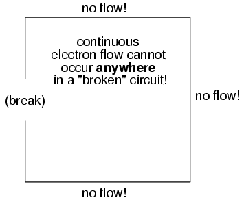
Un principio importante a tener en cuenta aquí es que no importa dónde ocurre la ruptura . Cualquier discontinuidad en el circuito evitará el flujo de electrones en todo el circuito. A menos que haya un lazo continuo y continuo de material conductor para que los electrones fluyan a través, un flujo sostenido simplemente no puede ser mantenido.
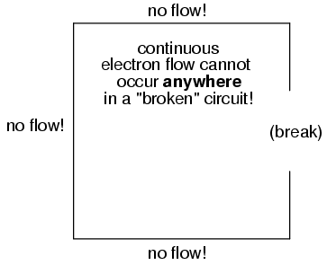
Como se mencionó anteriormente, necesitamos algo más que una ruta continua (circuito) antes de que ocurra un flujo continuo de electrones: también necesitamos algunos medios para empujar estos electrones alrededor del circuito. Al igual que los mármoles en un tubo o el agua en un tubo, se necesita algún tipo de fuerza de influencia para iniciar el flujo. Con los electrones, esta fuerza es la misma fuerza en acción en la electricidad estática: la fuerza producida por un desequilibrio de la carga eléctrica.
Si tomamos los ejemplos de cera y lana que se han frotado juntos, encontramos que el excedente de electrones en la cera (carga negativa) y el déficit de electrones en la lana (carga positiva) crea un desequilibrio de carga entre ellos. Este desequilibrio se manifiesta como una fuerza atractiva entre los dos objetos:
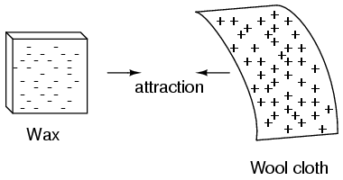
Si un hilo conductor se coloca entre la cera y la lana cargadas, los electrones fluirán a través de ella, como algunos de los electrones en exceso en la cera apresuran a través del alambre para volver a la lana, llenando la deficiencia de electrones allí:
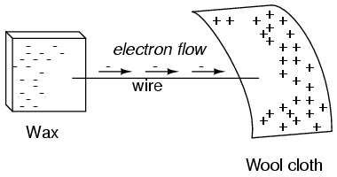
El desequilibrio de los electrones entre los átomos de la cera y los átomos de la lana crea una fuerza entre los dos materiales. Sin ningún camino para que los electrones fluyan de la cera a la lana, toda esta fuerza puede hacer es atraer a los dos objetos juntos. Sin embargo, ahora que un conductor puentea el hueco aislante, la fuerza provocará que los electrones fluyan en una dirección uniforme a través del alambre, aunque sea momentáneamente, hasta que la carga en esa zona se neutralice y la fuerza entre la cera y la lana disminuya.
La carga eléctrica formada entre estos dos materiales frotándolos juntos sirve para almacenar cierta cantidad de energía. Esta energía no es diferente a la energía almacenada en un alto depósito de agua que ha sido bombeado desde un estanque de nivel inferior:
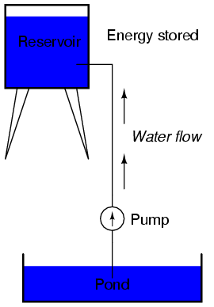
La influencia de la gravedad sobre el agua en el depósito crea una fuerza que intenta mover el agua de nuevo al nivel inferior. Si una tubería adecuada se ejecuta desde el depósito hasta el estanque, el agua fluirá bajo la influencia de la gravedad desde el depósito, a través de la tubería:
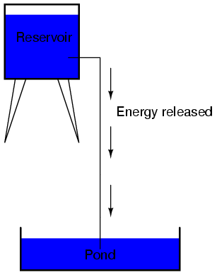
Se necesita energía para bombear el agua desde el estanque de nivel bajo hasta el depósito de alto nivel y el movimiento del agua a través de la tubería hasta su nivel original constituye una liberación de la energía almacenada del bombeo anterior.
Si el agua se bombea a un nivel aún más alto, se necesitará aún más energía para hacerlo, así se almacenará más energía y se liberará más energía si se deja que el agua fluya a través de un tubo de nuevo hacia abajo:
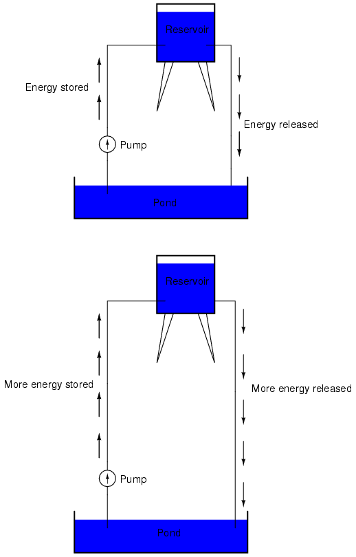
Los electrones no son muy diferentes. Si frotamos la cera y la lana juntos, "bombeamos" los electrones lejos de sus "niveles" normales, creando una condición donde existe una fuerza entre la cera y la lana, ya que los electrones tratan de restablecer sus posiciones anteriores Respectivos átomos). La fuerza que atrae a los electrones de nuevo a sus posiciones originales alrededor de los núcleos positivos de sus átomos es análoga a la fuerza que la gravedad ejerce sobre el agua del depósito, tratando de bajarla hasta su nivel anterior.
Así como el bombeo de agua a un nivel más alto resulta en la energía almacenada, "bombeo" electrones para crear un desequilibrio de carga eléctrica resulta en una cierta cantidad de energía que se almacena en ese desequilibrio. Y, al igual que proporcionar una forma de que el agua fluya hacia atrás desde las alturas del depósito, da como resultado una liberación de esa energía almacenada, proporcionando una manera para que los electrones vuelvan a sus "niveles" originales, da como resultado una liberación de energía almacenada.
Cuando los electrones están empujados en esa condición estática (como el agua que se sienta todavía, arriba en un depósito), la energía almacenada allí se llama energía potencial , porque tiene la posibilidad (potencial) de la liberación que todavía no ha sido completamente realizada. Cuando usted rasca sus zapatos de suela de goma contra una alfombra de tela en un día seco, se crea un desequilibrio de carga eléctrica entre usted y la alfombra. La acción de rascar sus pies almacena la energía en la forma de un desequilibrio de los electrones forzados de sus localizaciones originales. Esta carga (electricidad estática) es estacionaria, y no te darás cuenta de que la energía está siendo almacenada en absoluto. Sin embargo, una vez que usted coloca su mano contra un pomo de metal (con mucha movilidad de electrones para neutralizar su carga eléctrica), esa energía almacenada se liberará en forma de un flujo repentino de electrones a través de su mano, y lo percibirá como un ¡descarga eléctrica!
Esta energía potencial, almacenada en forma de desequilibrio de carga eléctrica y capaz de provocar que los electrones fluyan a través de un conductor, puede expresarse como un término llamado voltaje , que técnicamente es una medida de energía potencial por unidad de carga de electrones, o algo El físico llamaría energía potencial específica . Definido en el contexto de la electricidad estática, el voltaje es la medida del trabajo requerido para mover una unidad de carga de un lugar a otro, contra la fuerza que intenta mantener las cargas eléctricas equilibradas. En el contexto de fuentes de energía eléctrica, el voltaje es la cantidad de energía potencial disponible (trabajo por hacer) por unidad de carga, para mover electrones a través de un conductor.
Debido a que el voltaje es una expresión de energía potencial, que representa la posibilidad o potencial de liberación de energía a medida que los electrones se mueven de un "nivel" a otro, siempre se hace referencia entre dos puntos. Considere la analogía del depósito de agua:
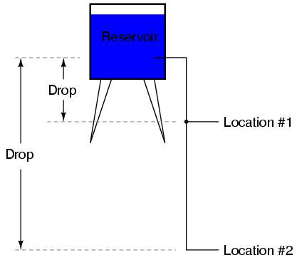
Debido a la diferencia en la altura de la gota, hay potencial para que se libere mucha más energía del depósito a través de la tubería a la ubicación 2 que a la posición 1. El principio puede entenderse intuitivamente al soltar una roca: Impacto violento, una roca caída desde una altura de un pie, o la misma roca caía desde una altura de una milla?? Obviamente, la caída de mayor altura resulta en una mayor liberación de energía (un impacto más violento). No podemos evaluar la cantidad de energía almacenada en un tanque de agua simplemente midiendo el volumen de agua como tampoco podemos predecir la gravedad del impacto de una roca descendente simplemente por conocer el peso de la roca: en ambos casos también debemos considerar hasta qué punto Estas masas caerán desde su altura inicial. La cantidad de energía liberada al permitir que una masa caiga es relativa a la distancia entre sus puntos inicial y final. Asimismo, la energía potencial disponible para mover electrones de un punto a otro es relativa a esos dos puntos. Por lo tanto, el voltaje siempre se expresa como una cantidad entre dos puntos. Curiosamente, la analogía de una masa potencialmente "caída" de una altura a otra es un modelo apto que el voltaje entre dos puntos es a veces llamado caída de voltaje .
El voltaje puede ser generado por otros medios que frotar ciertos tipos de materiales uno contra el otro. Las reacciones químicas, la energía radiante y la influencia del magnetismo en los conductores son algunas de las formas en que puede producirse el voltaje. Ejemplos de estas tres fuentes de voltaje son las baterías, las células solares y los generadores (como la unidad "alternador" bajo el capó de su automóvil). Por ahora, no vamos a entrar en detalles sobre cómo funciona cada una de estas fuentes de tensión funciona - más importante es que entendemos cómo las fuentes de tensión se pueden aplicar para crear el flujo de electrones en un circuito.
Tomemos el símbolo de una batería química y construimos un circuito paso a paso:
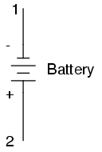
Cualquier fuente de voltaje, incluyendo baterías, tiene dos puntos para el contacto eléctrico. En este caso, tenemos el punto 1 y el punto 2 en el diagrama anterior. Las líneas horizontales de longitud variable indican que se trata de una batería, e indican además la dirección en la que el voltaje de esta batería intentará empujar los electrones a través de un circuito. El hecho de que las líneas horizontales en el símbolo de batería aparezcan separadas (y por lo tanto incapaces de servir como una trayectoria para que los electrones se muevan) no es motivo de preocupación: en la vida real, esas líneas horizontales representan placas metálicas sumergidas en un líquido o semisólido Material que no sólo conduce electrones, sino que también genera el voltaje para empujarlos a lo largo de la interacción con las placas.
Observe los pequeños signos "+" y "-" a la izquierda inmediata del símbolo de la batería. El final negativo (-) de la batería es siempre el final con el trazo más corto, y el final positivo (+) de la batería es siempre el final con el guión más largo. Ya que hemos decidido llamar a los electrones "negativamente" cargada (gracias, Ben!), El extremo negativo de una batería es ese fin que intenta empujar electrones fuera de él. Del mismo modo, el final positivo es ese final que intenta atraer electrones.
Con los extremos "+" y "-" de la batería no conectados a nada, habrá voltaje entre esos dos puntos, pero no habrá flujo de electrones a través de la batería, porque no hay trayectoria continua para que los electrones se muevan .
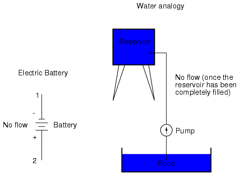
El mismo principio es válido para la analogía del depósito de agua y de la bomba: sin retorno del tubo de retorno al estanque, la energía almacenada en el depósito no puede liberarse en forma de flujo de agua. Una vez que el depósito está completamente lleno, no puede ocurrir flujo, no importa cuánta presión la bomba puede generar. Debe haber un camino completo (circuito) para que el agua fluya desde el estanque, hasta el embalse, y de vuelta al estanque para que el flujo continuo ocurra.
Podemos proporcionar tal camino para la batería conectando un pedazo de alambre de un extremo de la batería a la otra. Formando un circuito con un bucle de alambre, iniciaremos un flujo continuo de electrones en el sentido de las agujas del reloj:
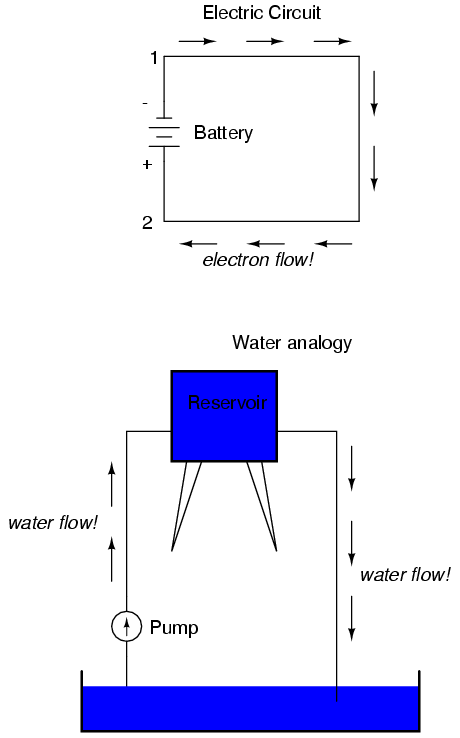
Mientras la batería continúe produciendo voltaje y la continuidad de la trayectoria eléctrica no se rompa, los electrones continuarán fluyendo en el circuito. Siguiendo la metáfora del agua que se mueve a través de una tubería, este flujo continuo y uniforme de electrones a través del circuito se llama corriente. Mientras la fuente de voltaje siga "empujando" en la misma dirección, el flujo de electrones continuará moviéndose en la misma dirección en el circuito. Este flujo de una sola dirección de electrones se llama Corriente Directa , o DC. En el segundo volumen de esta serie de libros, se exploran circuitos eléctricos donde la dirección de la corriente cambia de ida y vuelta: corriente alterna o corriente alterna. Pero por el momento, nos ocuparemos de los circuitos de corriente continua.
Debido a que la corriente eléctrica está compuesta de electrones individuales que fluyen al unísono a través de un conductor moviéndose a lo largo y empujando los electrones hacia delante, igual que los mármoles a través de un tubo o agua a través de un tubo, la cantidad de flujo a través de un solo circuito será la misma en cualquier punto. Si supervisáramos una sección transversal del cable en un solo circuito, contando los electrones que fluyen, notaríamos la misma cantidad exacta por unidad de tiempo que en cualquier otra parte del circuito, independientemente de la longitud del conductor o del diámetro del conductor .
Si rompemos la continuidad del circuito en cualquier punto , la corriente eléctrica cesará en todo el bucle, y el voltaje total producido por la batería se manifestará a través de la rotura, entre los extremos del alambre que solían ser conectados:
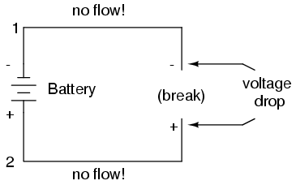
Observe los signos "+" y "-" dibujados en los extremos de la rotura en el circuito, y cómo corresponden a los signos "+" y "-" junto a los terminales de la batería. Estos marcadores indican la dirección en la que el voltaje intenta empujar el flujo de electrones, esa dirección potencial comúnmente referida como polaridad. Recuerde que el voltaje es siempre relativo entre dos puntos. Debido a este hecho, la polaridad de una caída de tensión también es relativa entre dos puntos: si un punto en un circuito recibe la etiqueta con un "+" o un "-" depende del otro punto al que se hace referencia. Echa un vistazo al siguiente circuito, donde cada esquina del bucle está marcada con un número de referencia:
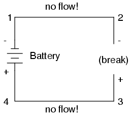
La polaridad de la tensión entre los puntos 2 y 3 es "-" para el punto 2 y "+" para el punto 3. La polaridad de la batería (1 "-" y 4 "+" ) Está intentando empujar los electrones a través del lazo en el sentido de las agujas del reloj de 1 a 2 a 3 a 4 y de nuevo a 1 otra vez..
Ahora veamos qué sucede si conectamos los puntos 2 y 3 nuevamente juntos, pero hacemos una pausa en el circuito entre los puntos 3 y 4:
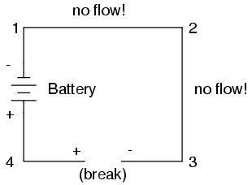
Con la ruptura entre 3 y 4, la polaridad de la caída de tensión entre estos dos puntos es "+" para 4 y "-" para 3. Tome especial nota del hecho de que el "signo" del punto 3 es opuesto al de la primera Ejemplo, donde la ruptura fue entre los puntos 2 y 3 (donde el punto 3 fue etiquetado como "+").. ¡Es imposible decir que el punto 3 de este circuito será siempre "+" o "-", porque la polaridad, como la tensión misma, no es específica de un solo punto, sino que es siempre relativa entre dos puntos!
El circuito de la sección anterior no es muy práctico. De hecho, puede ser muy peligroso construir (conectar directamente los polos de una fuente de tensión junto con una sola pieza de alambre). La razón por la que es peligroso es porque la magnitud de la corriente eléctrica puede ser muy grande en un cortocircuito, y la liberación de energía muy dramática (por lo general en forma de calor). Por lo general, los circuitos eléctricos se construyen de tal manera que hacen uso práctico de la energía liberada, de la manera más segura posible.
Un uso práctico y popular de la corriente eléctrica es para el funcionamiento de la iluminación eléctrica. La forma más simple de lámpara eléctrica es un diminuto "filamento" metálico dentro de una bombilla de vidrio transparente que brilla en caliente ("incandescentes") con energía térmica cuando pasa suficiente corriente eléctrica a través de ella. Al igual que la batería, tiene dos puntos de conexión conductores, uno para que los electrones entren y el otro para que los electrones salgan.
Conectado a una fuente de voltaje, un circuito de lámpara eléctrica se parece a esto:
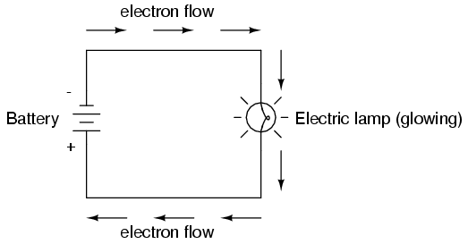
A medida que los electrones trabajan su camino a través del fino filamento de metal de la lámpara, encuentran más oposición al movimiento de lo que normalmente lo harían en un grueso trozo de alambre. Esta oposición a la corriente eléctrica depende del tipo de material, su área transversal y su temperatura. Es técnicamente conocida como resistencia . (Se puede decir que los conductores tienen baja resistencia y los aisladores tienen una resistencia muy alta). Esta resistencia sirve para limitar la cantidad de corriente a través del circuito con una cantidad dada de tensión suministrada por la batería, en comparación con el "cortocircuito" donde No teníamos nada más que un cable que unía un extremo de la fuente de voltaje (batería) a la otra..
Cuando los electrones se mueven contra la oposición de resistencia, se genera "fricción". Al igual que la fricción mecánica, la fricción producida por los electrones que fluyen contra una resistencia se manifiesta en forma de calor. La resistencia concentrada del filamento de una lámpara da lugar a una cantidad relativamente grande de energía térmica disipada en ese filamento. Esta energía térmica es suficiente para que el filamento brille en caliente, produciendo luz, mientras que los cables que conectan la lámpara a la batería (que tienen una resistencia mucho menor) casi no se calientan mientras conducen la misma cantidad de corriente.
Como en el caso del cortocircuito, si la continuidad del circuito se rompe en cualquier punto, el flujo de electrones se detiene en todo el circuito. Con una lámpara en su lugar, esto significa que dejará de brillar:
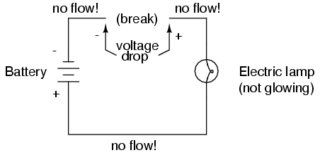
Como antes, sin flujo de electrones, todo el potencial (voltaje) de la batería está disponible a través de la rotura, esperando la oportunidad de una conexión para atravesar esa ruptura y permitir el flujo de electrones de nuevo. Esta condición se conoce como un circuito abierto , donde una interrupción en la continuidad del circuito evita la corriente a lo largo. Todo lo que se necesita es una sola ruptura en la continuidad para "abrir" un circuito. Una vez que se han conectado una vez más las interrupciones y se ha restablecido la continuidad del circuito, se conoce como circuito cerrado .
Lo que vemos aquí es la base para encender y apagar las lámparas mediante conmutadores remotos. Debido a que cualquier interrupción en la continuidad de un circuito da lugar a una parada de corriente en todo el circuito, podemos usar un dispositivo diseñado para romper intencionalmente esa continuidad (llamado interruptor), montado en cualquier lugar conveniente al que podamos dirigir cables, para controlar el flujo de Electrones en el circuito:
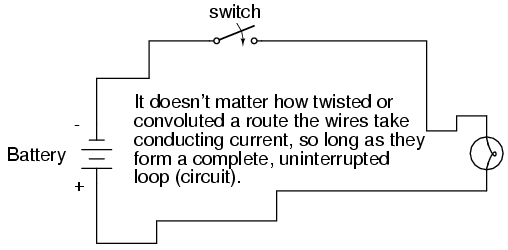
Así es como un interruptor montado en la pared de una casa puede controlar una lámpara que está montada en un pasillo largo, o incluso en otra habitación, lejos del interruptor. El propio interruptor está construido de un par de contactos conductores (usualmente hechos de algún tipo de metal) forzados juntos por un accionador o pulsador mecánico de palanca. Cuando los contactos se tocan, los electrones pueden fluir de uno a otro y la continuidad del circuito se establece; Cuando se separan los contactos, se evita el flujo de electrones de uno a otro por el aislamiento del aire entre ellos, y se rompe la continuidad del circuito.
Quizás el mejor tipo de interruptor a demostrar para la ilustración del principio básico es el interruptor del "cuchillo":
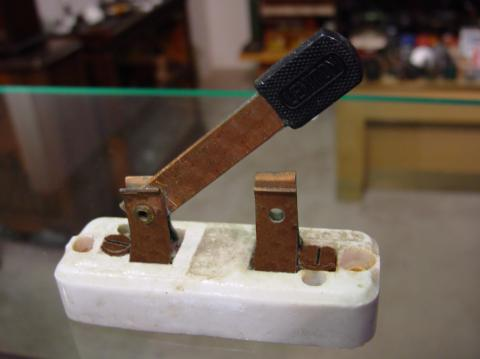
Un interruptor de cuchilla no es más que una palanca conductora, libre de pivotar sobre una bisagra, entrando en contacto físico con uno o más puntos de contacto estacionarios que son también conductores. El interruptor mostrado en la ilustración anterior está construido sobre una base de porcelana (un excelente material aislante), utilizando cobre (un excelente conductor) para la "hoja" y puntos de contacto. El mango es de plástico para aislar la mano del operador de la hoja conductora del interruptor al abrirla o cerrarla.
Aquí está otro tipo de interruptor del cuchillo, con dos contactos estacionarios en vez de uno:
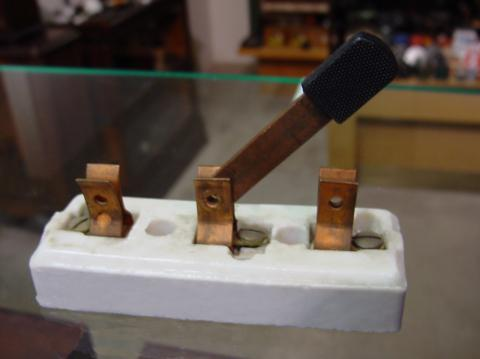
El interruptor de cuchillo en particular que se muestra aquí tiene una "hoja", pero dos contactos estacionarios, lo que significa que puede hacer o romper más de un circuito. Por ahora esto no es terriblemente importante de ser consciente, sólo el concepto básico de lo que es un interruptor y cómo funciona.
Interruptores de cuchillo son grandes para ilustrar el principio básico de cómo funciona un interruptor, pero presentan problemas de seguridad distintos cuando se utiliza en circuitos eléctricos de alta potencia. Los conductores expuestos en un interruptor de cuchilla hacen un contacto accidental con el circuito una posibilidad distinta, y cualquier chispa que pueda ocurrir entre la lámina móvil y el contacto estacionario es libre de encender cualquier material inflamable cercano. La mayoría de los diseños de conmutadores modernos tienen sus conductores móviles y puntos de contacto sellados dentro de una caja aislante para mitigar estos peligros. Una fotografía de algunos tipos de conmutadores modernos muestra cómo los mecanismos de conmutación son mucho más ocultos que con el diseño de la cuchilla:
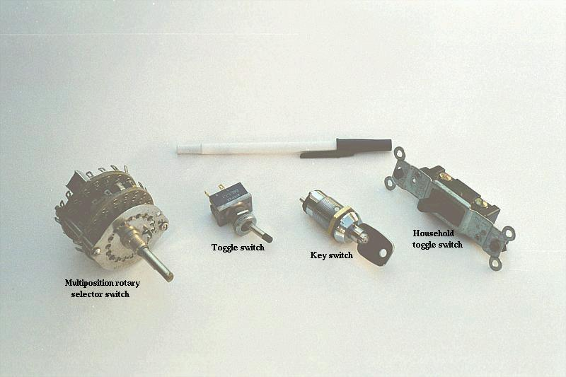
De acuerdo con la terminología "abierta" y "cerrada" de los circuitos, un interruptor que está haciendo contacto de un terminal de conexión al otro (ejemplo: un interruptor de cuchilla con la cuchilla tocando completamente el punto de contacto estacionario) proporciona continuidad para que los electrones fluyan A través, y se llama un interruptor cerrado . Por el contrario, un interruptor que está rompiendo la continuidad (por ejemplo: un interruptor de cuchilla con la cuchilla que no toca el punto de contacto estacionario) no permitirá que los electrones pasen a través y se denomina interruptor abierto . Esta terminología es a menudo confusa para el nuevo estudiante de electrónica, porque las palabras "abierto" y "cerrado" se entienden comúnmente en el contexto de una puerta, donde "abierto" se equipara con el libre paso y "cerrado" con bloqueo. Con los interruptores eléctricos, estos términos tienen significado opuesto: "abierto" significa ningún flujo mientras que "cerrado" significa libre paso de electrones.
Debido a que se necesita energía para forzar a los electrones a fluir contra la oposición de una resistencia, habrá tensión manifestada (o "caída") entre cualquier punto de un circuito con resistencia entre ellos. Es importante notar que aunque la cantidad de corriente (la cantidad de electrones pasando un punto dado cada segundo) es uniforme en un circuito simple, la cantidad de voltaje (energía potencial por unidad de carga) entre diferentes conjuntos de puntos en un solo Circuito puede variar considerablemente:
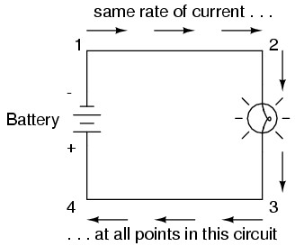
Tomemos este circuito como ejemplo. Si etiquetáramos cuatro puntos en este circuito con los números 1, 2, 3 y 4, veremos que la cantidad de corriente conducida a través del cable entre los puntos 1 y 2 es exactamente la misma que la cantidad de corriente que se conduce a través de la lámpara (Entre los puntos 2 y 3). Esta misma cantidad de corriente pasa a través del hilo entre los puntos 3 y 4, ya través de la batería (entre los puntos 1 y 4).
Sin embargo, encontraremos que el voltaje que aparece entre dos de estos puntos es directamente proporcional a la resistencia dentro de la trayectoria conductora entre esos dos puntos, dado que la cantidad de corriente a lo largo de cualquier parte del trayecto del circuito es la misma Este circuito simple, lo es). En un circuito de lámpara normal, la resistencia de una lámpara será mucho mayor que la resistencia de los cables de conexión, por lo que deberíamos esperar ver una cantidad sustancial de tensión entre los puntos 2 y 3, con muy poco entre los puntos 1 y 2, o Entre 3 y 4. El voltaje entre los puntos 1 y 4, por supuesto, será la cantidad total de "fuerza" ofrecida por la batería, que será sólo ligeramente mayor que el voltaje a través de la lámpara (entre los puntos 2 y 3)..
Esto, de nuevo, es análogo al sistema de depósito de agua:
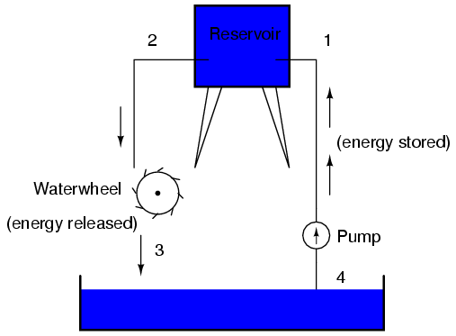
Entre los puntos 2 y 3, donde la caída de agua está liberando energía en la rueda de agua, hay una diferencia de presión entre los dos puntos, que refleja la oposición al flujo de agua a través de la rueda de agua. Desde el punto 1 al punto 2, o desde el punto 3 al punto 4, donde el agua fluye libremente a través de depósitos con poca oposición, hay poca o ninguna diferencia de presión (sin energía potencial). Sin embargo, la tasa de flujo de agua en este sistema continuo es la misma en todas partes (suponiendo que los niveles de agua en el estanque y el depósito son inmutables): a través de la bomba, a través de la rueda de agua, ya través de todas las tuberías. Lo mismo ocurre con los circuitos eléctricos simples: la velocidad del flujo de electrones es la misma en cada punto del circuito, aunque los voltajes pueden diferir entre diferentes conjuntos de puntos.
"Lo bueno de los estándares es que hay tantos para elegir."
Andrew S. Tanenbaum, profesor de informática
Cuando Benjamin Franklin hizo su conjetura con respecto a la dirección del flujo de la carga (de la cera lisa a la lana áspera), él fijó un precedente para la notación eléctrica que existe hasta este día, a pesar del hecho de que los electrones son las unidades constituyentes de la carga, Y que son desplazados de la lana a la cera - no de la cera a la lana - cuando estas dos sustancias se frotan entre sí. Esta es la razón por la que se dice que los electrones tienen una carga negativa : porque Franklin asumió que la carga eléctrica se movía en la dirección opuesta a lo que realmente hace, y así los objetos que llamó negativos (que representan una deficiencia de carga) tienen un excedente de electrones.
En el momento en que se descubrió la verdadera dirección del flujo de electrones, la nomenclatura de "positivo" y "negativo" ya estaba tan bien establecida en la comunidad científica que no se hizo ningún esfuerzo para cambiarla, aunque llamar a los electrones "positivos" haría más Sentido al referirse a la carga "excesiva". Los términos "positivo" y "negativo" son invenciones humanas, y como tales no tienen un significado absoluto más allá de nuestras propias convenciones de lenguaje y descripción científica. Franklin podría haberse referido tan fácilmente a un exceso de carga como "negro" y una deficiencia como "blanco", en cuyo caso los científicos hablarían de electrones que tienen una carga "blanca" (suponiendo la misma conjetura incorrecta de posición de carga entre cera y lana).
Sin embargo, debido a que tendemos a asociar la palabra "positivo" con "excedente" y "negativo" con "deficiencia", la etiqueta estándar para carga de electrones parece retroceder. Debido a esto, muchos ingenieros decidieron mantener el viejo concepto de electricidad con "positivo" refiriéndose a un exceso de carga, y el flujo de carga de la etiqueta (corriente) en consecuencia. Esto se conoce como notación de flujo convencional :
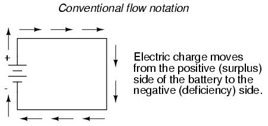
Otros optaron por designar el flujo de carga de acuerdo con el movimiento real de los electrones en un circuito. Esta forma de simbología se conoce como notación de flujo de electrones:
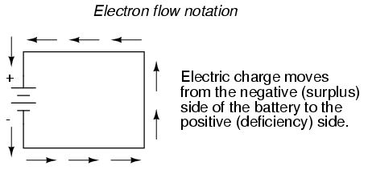
En la notación de flujo convencional, mostramos el movimiento de carga de acuerdo con las etiquetas (técnicamente incorrectas) de + y -. De esta manera las etiquetas tienen sentido, pero la dirección del flujo de carga es incorrecta. En la notación de flujo de electrones, seguimos el movimiento real de los electrones en el circuito, pero las etiquetas + y - parecen hacia atrás. ¿Importa realmente, cómo designamos el flujo de carga en un circuito? En realidad no, siempre y cuando sea consistente en el uso de nuestros símbolos. Puede seguir una dirección imaginaria de la corriente (flujo convencional) o la corriente (flujo de electrones) con igual éxito en lo que respecta al análisis de circuitos. Los conceptos de voltaje, corriente, resistencia, continuidad e incluso tratamientos matemáticos como la Ley de Ohm (capítulo 2) y las Leyes de Kirchhoff (capítulo 6) siguen siendo tan válidos con cualquiera de los dos estilos de notación.
Encontrará la notación de flujo convencional seguida por la mayoría de los ingenieros eléctricos e ilustrada en la mayoría de los libros de texto de ingeniería. El flujo de electrones se ve más a menudo en los libros de texto introductorios (este incluido) y en los escritos de científicos profesionales, especialmente los físicos de estado sólido que se ocupan con el movimiento real de electrones en sustancias. Estas preferencias son culturales, en el sentido de que ciertos grupos de personas han considerado ventajoso prever el movimiento de la corriente eléctrica de ciertas maneras. Siendo que la mayoría de los análisis de circuitos eléctricos no dependen de una representación técnicamente precisa del flujo de carga, la elección entre la notación de flujo convencional y la notación de flujo de electrones es arbitraria. . . casi.
Muchos dispositivos eléctricos toleran corrientes reales de cualquier dirección sin diferencias en el funcionamiento. Las lámparas incandescentes (el tipo que utiliza un fino filamento de metal que brilla con calor blanco con suficiente corriente), por ejemplo, producen luz con igual eficacia independientemente de la dirección de la corriente. Incluso funcionan bien en corriente alterna (AC), donde la dirección cambia rápidamente con el tiempo. Conductores e interruptores operan independientemente de la dirección actual, también. El término técnico para esta irrelevancia del flujo de carga es la no polarización . Podríamos decir entonces que las lámparas incandescentes, los interruptores y los cables son componentes no polarizados. Por el contrario, cualquier dispositivo que funcione de manera diferente en las corrientes de dirección diferente se llamaría un dispositivo polarizado .
Hay muchos tales dispositivos polarizados usados en circuitos eléctricos. La mayoría de ellas están hechas de las llamadas sustancias semiconductoras y, como tales, no se examinan en detalle hasta el tercer volumen de esta serie de libros. Al igual que los interruptores, las lámparas y las baterías, cada uno de estos dispositivos está representado en un diagrama esquemático por un símbolo único. Como se podría adivinar, los símbolos de dispositivo polarizado normalmente contienen una flecha dentro de ellos, en algún lugar, para designar una dirección de corriente preferida o exclusiva. Aquí es donde las notas competidoras del flujo convencional y del electrón importan realmente. Debido a que los ingenieros de hace mucho tiempo se han establecido en el flujo convencional como la notación estándar de su "cultura", y porque los ingenieros son las mismas personas que inventan aparatos eléctricos y los símbolos que los representan, las flechas utilizadas en los símbolos de estos dispositivos apuntan en dirección de convencionales Flujo, no flujo de electrones . Es decir, todos los símbolos de estos dispositivos tienen marcas de flecha que apuntan contra el flujo real de electrones a través de ellos.
Quizás el mejor ejemplo de un dispositivo polarizado es el diodo . Un diodo es una "válvula" unidireccional para corriente eléctrica, análoga a una válvula de retención para aquellos familiarizados con sistemas hidráulicos y de fontanería. Idealmente, un diodo proporciona un flujo sin obstáculos para la corriente en una dirección (poca o ninguna resistencia), pero impide el flujo en la otra dirección (resistencia infinita). Su símbolo esquemático se parece a esto:
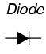
Colocado dentro de un circuito de batería / lámpara, su funcionamiento es como tal:
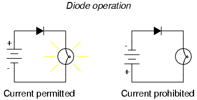
Cuando el diodo se enfrenta en la dirección adecuada para permitir la corriente, la lámpara se ilumina. De lo contrario, el diodo bloquea todo el flujo de electrones como una rotura en el circuito, y la lámpara no brillará.
Si etiquetamos la corriente del circuito usando la notación de flujo convencional, el símbolo de flecha del diodo tiene un sentido perfecto: la punta de flecha triangular apunta en la dirección del flujo de carga, de positivo a negativo:
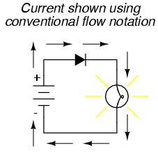
Por otro lado, si usamos la notación de flujo de electrones para mostrar la verdadera dirección del recorrido de electrones alrededor del circuito, la simbología de flecha del diodo parece retroceder:
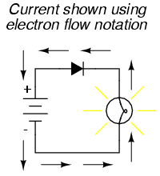
Por esta sola razón, muchas personas optan por hacer que el flujo convencional de su notación de elección al dibujar la dirección del movimiento de carga en un circuito. Si por ninguna otra razón, los símbolos asociados con componentes semiconductores como los diodos tienen más sentido de esta manera. Sin embargo, otros eligen mostrar la dirección verdadera del recorrido del electrón para evitar de tener que decirse ellos mismos, "apenas recuerde que los electrones están moviendo realmente la otra manera" siempre que la dirección verdadera del movimiento del electrón se convierte en una edición.
En esta serie de libros de texto, me he comprometido a usar la notación de flujo de electrones. Irónicamente, esta no era mi primera opción. Lo encontré mucho más fácil cuando primero aprendí la electrónica usar la notación convencional del flujo, principalmente debido a las direcciones de las flechas del símbolo del dispositivo semiconductor. Más tarde, cuando empecé mi primer entrenamiento formal en electrónica, mi instructor insistió en usar la notación de flujo de electrones en sus conferencias. De hecho, pidió que tomáramos nuestros libros de texto (que fueron ilustrados usando la notación de flujo convencional) y usar nuestras plumas para cambiar las direcciones de todas las flechas actuales para señalar la manera "correcta"! Sin embargo, su preferencia no era arbitraria. En su carrera de 20 años como técnico de electrónica de la Marina de los Estados Unidos, trabajó en muchos equipos de tubos de vacío.t. Antes del advenimiento de componentes semiconductores como transistores, se usaron dispositivos conocidos como tubos de vacío o tubos de electrones para amplificar pequeñas señales eléctricas. Estos dispositivos trabajan en el fenómeno de los electrones que se lanzan a través de un vacío, su velocidad de flujo controlada por voltajes aplicados entre las placas de metal y las rejillas colocadas dentro de su trayectoria, y se entienden mejor cuando se visualizan usando la notación de flujo de electrones.
Cuando me gradué de ese programa de entrenamiento, volví a mi viejo hábito de notación de flujo convencional, principalmente para minimizar la confusión con los símbolos de componentes, ya que los tubos de vacío son casi obsoletos excepto en aplicaciones especiales. Recogiendo notas para la escritura de este libro, tenía la intención completa de ilustrarlo usando flujo convencional.
Años después, cuando me convertí en profesor de electrónica, el plan de estudios para el programa que iba a enseñar ya se había establecido en torno a la notación del flujo de electrones. Curiosamente, esto se debió en parte al legado de mi primer instructor de electrónica (el veterano de 20 años de la Marina), pero eso es otra historia por completo! No queriendo confundir a los estudiantes al enseñar "diferente" a los otros instructores, tuve que superar mi hábito y acostumbrarme a visualizar el flujo de electrones en lugar de convencional. Debido a que quería que mi libro fuera un recurso útil para mis estudiantes, cambiaron los planes a regañadientes y lo ilustré con todas las flechas apuntando la manera "correcta". Oh, bueno, a veces no puedes ganar!
En una nota positiva (no juego de palabras), he descubierto posteriormente que algunos estudiantes prefieren la notación de flujo de electrones cuando primero aprender sobre el comportamiento de las sustancias semiconductoras. Además, el hábito de visualizar los electrones que fluyen contra las flechas de símbolos de dispositivos polarizados no es tan difícil de aprender, y al final he descubierto que puedo seguir la operación de un circuito igualmente bien usando cualquiera de los modos de notación. Sin embargo, a veces me pregunto si todo sería mucho más fácil si volvíamos a la fuente de la confusión -la conjetura errónea de Ben Franklin- y solucionábamos el problema, llamando a los electrones "positivos" ya los protones "negativos".
Los contribuyentes a este capítulo se enumeran en orden cronológico de sus contribuciones, desde la más reciente a la primera. Consulte el Apéndice 2 (Lista de contribuidores) para ver las fechas y la información de contacto.
Bill Heath (Septiembre de 2002): Se señaló error en la ilustración del átomo de carbono - el núcleo se muestra con siete protones en lugar de seis.
Ben Crowell, Ph.D. (13 de enero de 2001): sugerencias para mejorar la precisión técnica de las definiciones de voltaje y carga .
Jason Starck (junio de 2000): Formateo de documentos HTML, lo que llevó a una segunda edición mucho mejor.
Lessons In Electric Circuits copyright (C) 2000-2017 Tony R. Kuphaldt, under the terms and conditions of the Design Science License.